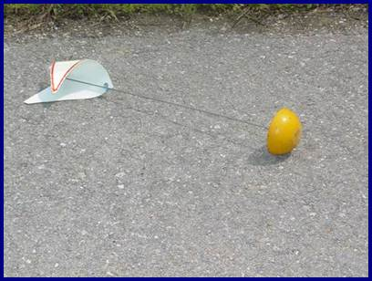
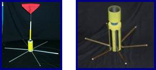
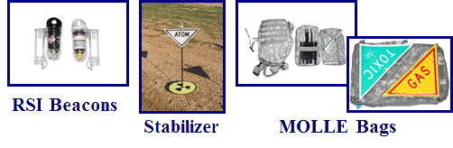

Smart Marker
Brief History
In 1997, the Chemical School of Directorate of Combat Developments (DCD) drafted a concept for the digital marking
of contaminated areas.
However, in 1998 the National Training Center (NTC) complained about marker visibility/reflectivity, stability, and
the stability of the unit.
Therefore a Concept Evaluation Plan (CEP) entitled "Smart Marker" was proposed and in 1999, funding was provided by
a contract approved by UMR (University of Missouri - Rolla).
In the Fall of 2001, The Engineering Department at UMR, in conjunction with Ft. Leonard Wood
performed a study and constructed a prototype "Smart Marker".


UMR's smart marker prototype, c. 2001
RSI Program Involvement
Program involvement began in 2005. Phase I was to improve the FOX hazard marker system and bring Proof of Concept/Principle to the
digital marker (Smart Marker).
In the second phase, RSI added MOLLE compatible marking kits.
Finally, in the third phase, we included productization of the non-replaceable battery beacon light, a new reusable beacon light, and
investigated alternate methods for digital marking.
In 2008, we continued the development of the Proof of Principle Smart Marker variant prototype (Digital Increments I & II).
Increment I - Improved Visual Variant
COTS IR and visible beacons; more reflective flags; modified rods; additional stability; compatibility with MOLLE bags
and existing and future CBRN Recon vehicles.

Increment II - Data Transmission Variant
Smart Marker
 Old smart marker
Old smart marker